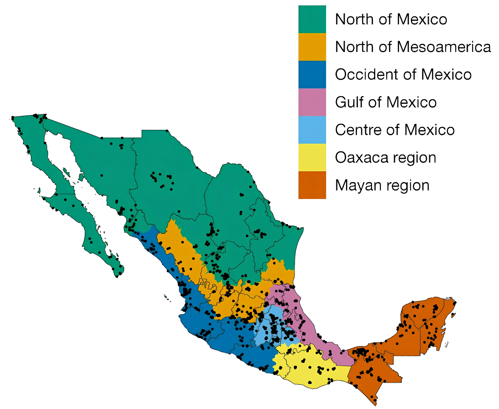
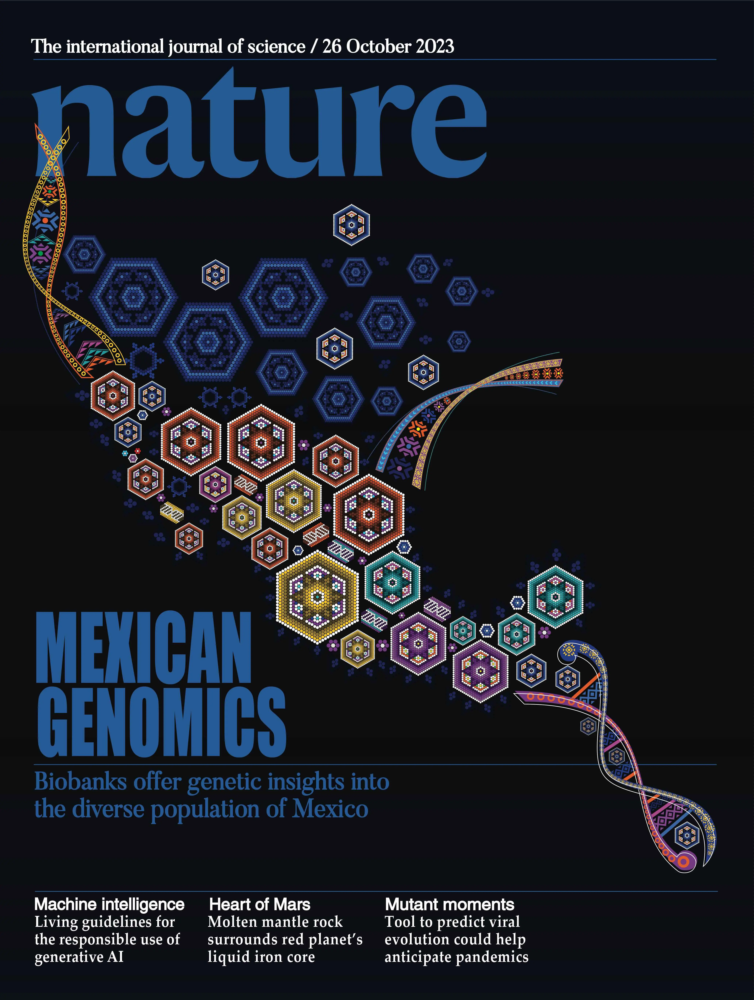
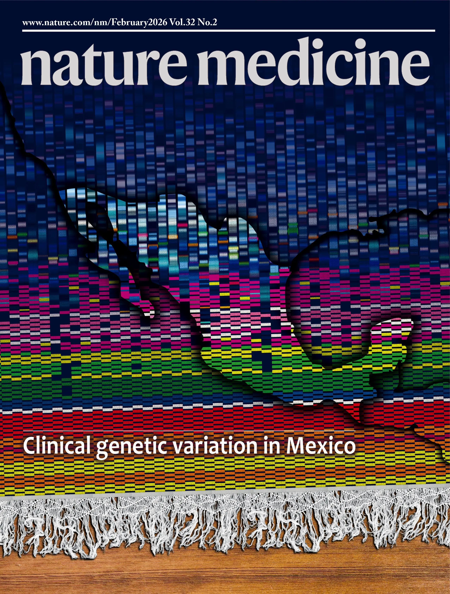

A nationwide effort to characterize the genomic diversity of the Mexican population.
The Mexican Biobank Project is a landmark initiative to understand the genetic diversity of the Mexican population and its impact on health and human evolution. By analyzing more than 6,000 individuals distributed nationwide from diverse regions and ethnic backgrounds, the project is building one of the most comprehensive genomic resources ever created in Latin America. Developed entirely in Mexico, it aims to advance biomedical research, guide public health policy, and contribute to a more inclusive global view of human genetics.
Genotyped individuals
States
Rural and urban localities


Sohail, M., Palma-Martínez, M.J., Chong, A.Y. et al. Nature 622, 775–783 (2023)
See publication
Barberena-Jonas, C., Medina-Muñoz, S.G., Cedillo-Castelán, V. et al. Nature Medicine 32, 725–735 (2026)
See publication